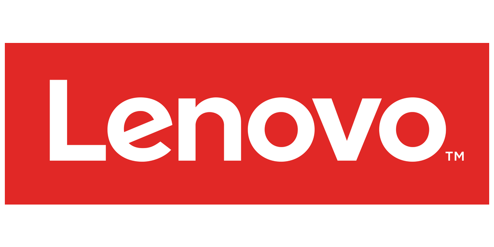
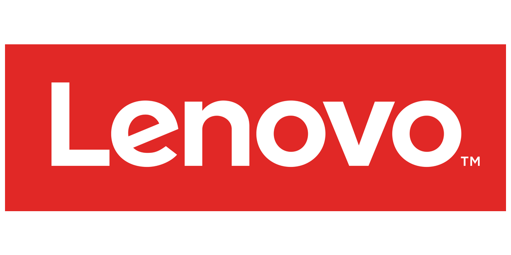
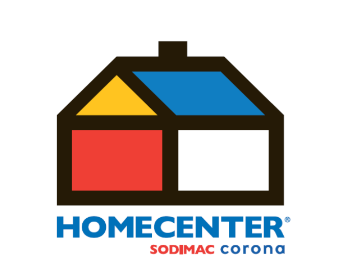
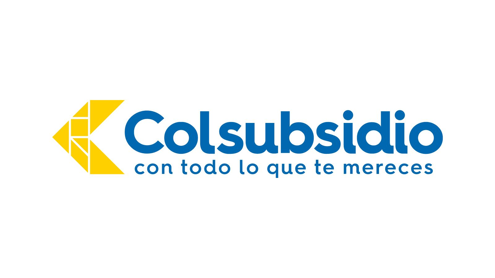
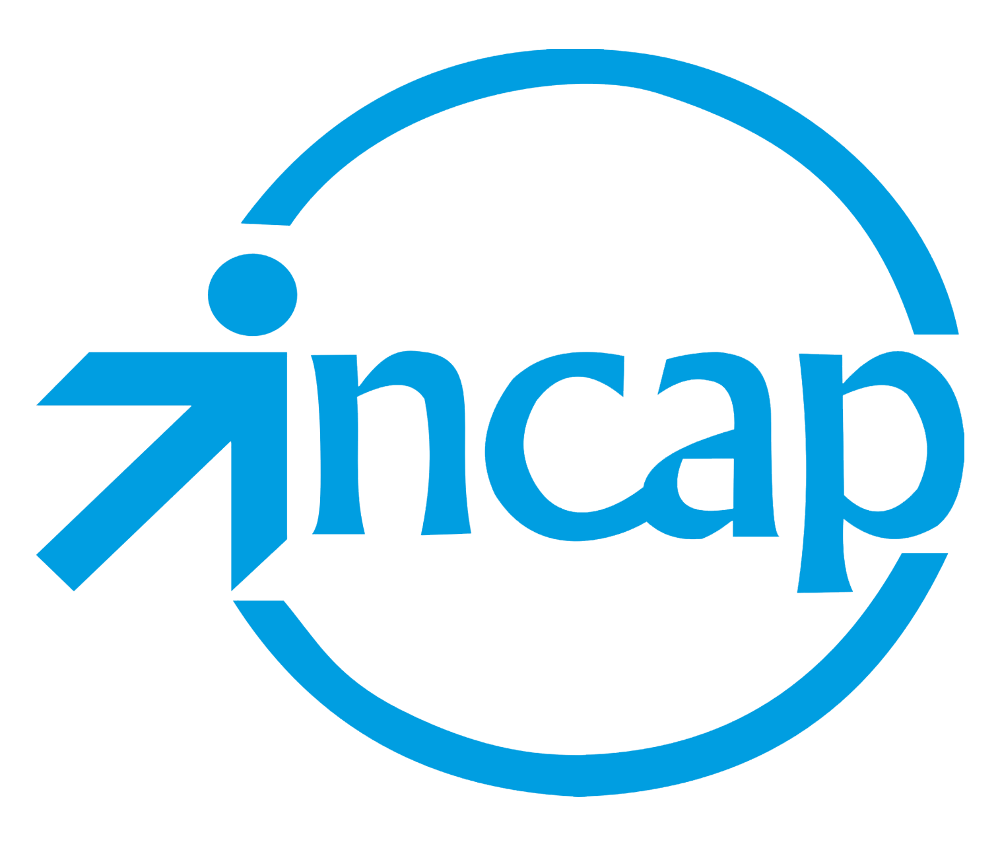
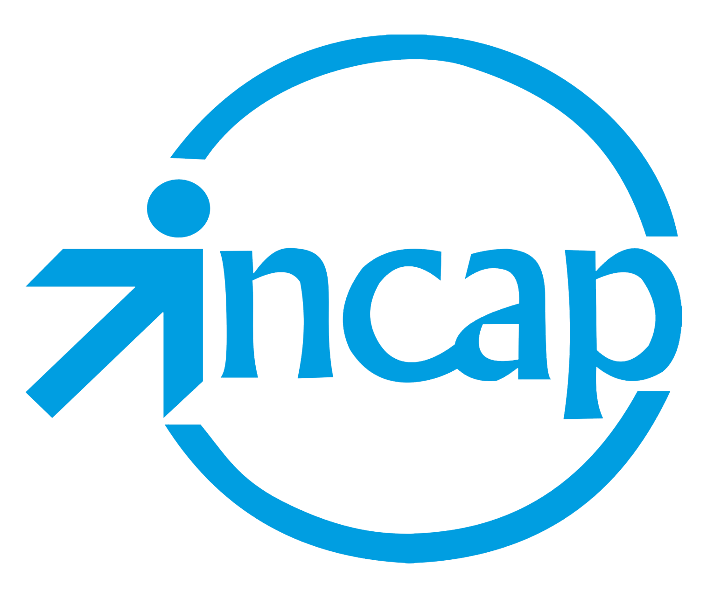

Empresas asociadas
 

Proyectos
Mantenimiento preventivo de los equipos de cómputo en el área de callcenter de la empresa Avianca.
Mantenimiento preventivo de los equipos de cómputo en el área de callcenter de Colsubsidio.
Mantenimiento de los servidores del instituto colombiano de aprendizaje INCAP
Instalación de los equipos de cómputo en las cajas de ventas de los supermercados Éxito.
Mantenimiento del sistema CCTV de los almacenes de Homecenter.
Nuestros cliente


 
